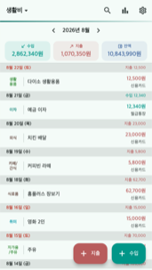
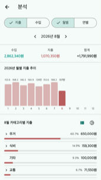
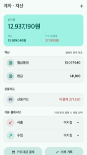
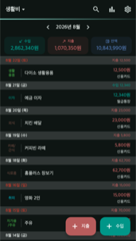

앱이소 가계부
문자가 오면 저절로 적히는 가계부
광고 없이 완전 무료입니다. 결제도, 로그인도, 계정도 없습니다.
기록한 내용은 모두 휴대폰 안에만 저장되고, 서버로 보내지 않습니다 —
서버 자체가 없거든요.
이런 걸 할 수 있어요
- 문자 자동 등록 — 카드 승인 문자가 오면 금액·가맹점을 읽어 지출로
자동 기록합니다. 문자함은 읽지 않고, 기능을 켠 뒤 도착하는 문자만 그 순간 처리합니다.
카테고리는 그동안 쓴 기록에서 배워 저절로 채워집니다. (안드로이드)
- 여러 장부 — 생활비·용돈처럼 가계부를 여러 권으로 나눠 쓰고,
화면을 옆으로 밀어 넘겨봅니다. 장부마다 비밀번호를 걸 수도 있습니다.
- 계좌·자산 — 통장·현금·카드를 등록하면 계좌별 잔액과 순자산을
보여줍니다. 실제 통장 잔액과 대조하고, 카드대금 결제도 청구기간 사용액을
자동으로 채워 한 번에 기록합니다.
- 분석·검색·태그 — 월별·연별 지출 추이와 카테고리 비중을 차트로 보고,
항목·메모·금액 조건으로 검색해 합계를 바로 확인합니다. 태그로 거래를 묶어
모임 정산처럼 청구 금액을 공유할 수도 있습니다.
- 백업 — 모든 장부를 파일 하나로 내보내고 되돌립니다.
비밀번호를 걸면 백업 파일이 암호화됩니다. 기기를 바꿔도 파일만 옮기면 끝.
화면

이번 달 한눈에

월별 분석

계좌·자산

다크 모드
개인정보
이 앱은 개인정보를 수집하지 않습니다. 문자도 휴대폰 안에서만 처리하고 밖으로
보내지 않습니다. 자세한 내용은
개인정보처리방침을 확인해 주세요.
문의
버그 제보나 넣었으면 하는 기능이 있으면
appisoLabs@gmail.com 으로 알려주세요.
어떤 버전에서 생긴 일인지(앱 도움말 맨 아래에 적혀 있어요) 같이 적어주시면 도움이 됩니다.